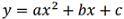
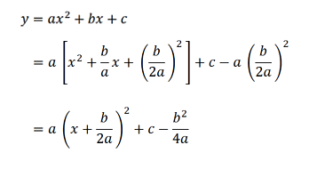
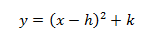

a,b,c 為實數，a不為0， 稱為二次函數
要了解函數，圖形是不可或缺的工具。而要畫出圖形，對函數性質又要一定了解。函數與圖形是相輔相成的關係。
對於二次函數，我們透過配方法:

對於二次函數圖形我們要掌握
以下為 y = ax^2 的函數圖形，圖中紅色的小點可用手移動，上下移動可改變 a 值，請觀察 a 值(領導係數)改變後圖形的影響
通常，我們會把二次函數假設為
其中，h代表 x 軸的位移，k 代表 y 軸的位移。
圖中為的圖形
紅色小點的 X 座標為 h，Y座標為 k，請嘗試移動紅色小點，觀察圖形平移的結果